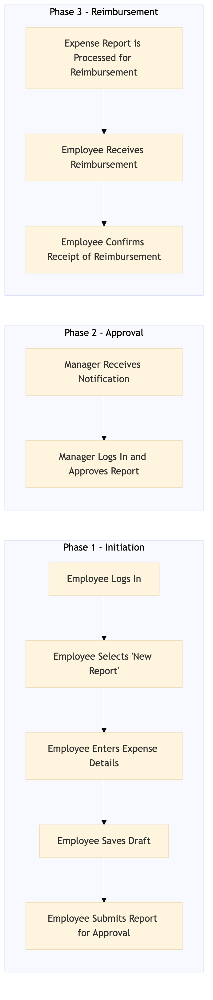

This process document outlines the steps for creating and submitting an expense report using Concur within the TMC Expense and Payments domain.
| Trigger | Employee initiates the creation of an expense report after completing travel or business expenses. |
| Outcome | The employee successfully submits a complete and accurate expense report, which is approved by their manager and processed for reimbursement. |
| Systems | Concur T2 Concur Expense S/4HANA Amex Corporate Card |

Click to enlarge
| Step | Name & Pain Point | Role | System | Input | Output | KPI | Flags |
|---|---|---|---|---|---|---|---|
| 1.1 | Employee Logs In Frequent login issues due to system downtime or connectivity problems. | Employee | Concur T2 | Credentials | Access to Concur Expense Interface | 95% Login Success Rate | ⚠ Exception |
| 1.2 | Employee Selects 'New Report' Difficulty in finding the 'New Report' option. | Employee | Concur Expense | None | Expense report creation interface | 80% New Report Initiation Rate | ⚠ Exception |
| 1.3 | Employee Enters Expense Details Manual entry errors leading to rejected reports. | Employee | Concur Expense | Expense data (date, amount, category, receipt) | Populated expense report draft | 90% Data Accuracy Rate | ⚠ Exception |
| 1.4 | Employee Saves Draft System crashes or data loss during save process. | Employee | Concur Expense | None | Saved expense report draft | 85% Draft Save Rate | ⚠ Exception |
| 1.5 | Employee Submits Report for Approval Submission errors or delays. | Employee | Concur Expense | None | Submitted expense report | 90% Submission Rate | ⚠ Exception |
| 1.6 | Manager Receives Notification Missed notifications due to system issues. | Manager | Concur Expense | None | Notification of pending approval | 95% Notification Delivery Rate | ⚠ Exception |
| 1.7 | Manager Logs In and Approves Report Delays in approval process due to manager availability. | Manager | Concur Expense | Credentials, Approval Decision | Approved expense report | 85% Approval Rate | ◆ Decision⚠ Exception |
| 1.8 | Expense Report is Processed for Reimbursement Payment delays or errors. | Finance Department | Concur Expense, S/4HANA | Approved expense report | Reimbursement processed | 90% Processing Success Rate | ⚠ Exception |
| 1.9 | Employee Receives Reimbursement Payment not received or incorrect amount. | Employee | Amex Corporate Card, Bank Account | None | Reimbursement payment | 85% Payment Success Rate | ⚠ Exception |
| 1.10 | Employee Confirms Receipt of Reimbursement Difficulty in confirming receipt. | Employee | Concur Expense | Confirmation | Completed expense report cycle | 95% Confirmation Rate | ⚠ Exception |